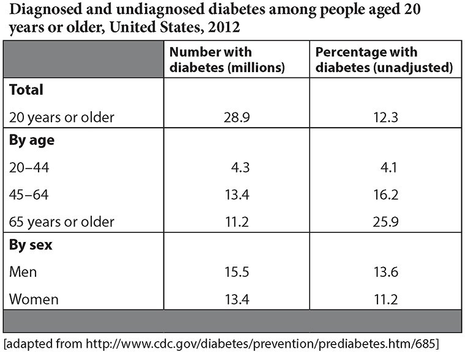

The following letter from a purchaser of a kitchen device
contains several numbered blanks, each marked “Select...”
Beneath each one is a set of choices. Indicate the choice
from each set that is correct and belongs in the blank.
Customer Service Manager
Super Mix, Inc.
2700 Melrose Way
Canton, AK 15555
Dear Mr. Sherwood:
I am a longtime customer of Super Mix products. I have
purchased numerous Super Mix blending products over the
years and have always been impressed with their
performance and durability. However, my recent purchase
When I first opened the Super Juicer box, I found an array
of small parts
together. The instruction
manual for the assembly of the device was written in poorly
translated English. I was confused as to how some of the
parts were supposed to connect.
the
manual contained complicated diagrams that were no help
at all. I had to go online to watch a video of someone
assembling the appliance properly, which was very time-consuming.
Even after I assembled
The juicer can
handle only soft fruits such as citrus and bananas, not firmer
fruits and vegetables. In fact,
sounds as if
you are overloading the machine. Considering the price tag
and your company’s reputation, I was expecting a juicer
with much more power.
I bought the product, and I will keep it.
However, I would like you to consider redesigning the Super
Juicer to make it more user-friendly. Also, please know that if
I have a similar experience in the future with your other
products, I will switch to another brand.
Sincerely,
Warren Brinker
Use the following passage to answer Questions 7–13
Prediabetes: Am I at Risk?
1 The Centers for Disease Control and Prevention (CDC)
estimates that 1 of every 3 US adults had prediabetes in
2010. That is 79 million Americans aged 20 years or
older. The vast majority of people living with prediabetes
do not know they have it. A person with prediabetes has
a blood sugar level higher than normal, but not high
enough for a diagnosis of diabetes.
2 Prediabetes is a serious health condition that increases
the risk of developing type 2 diabetes, heart disease, and
stroke. Seventy-nine million Americans—35% of adults
aged 20 years and older—have prediabetes. Half of all
Americans aged 65 years and older have prediabetes.
Without lifestyle changes to improve their health, 15% to
30% of people with prediabetes will develop type 2
diabetes within 5 years.
How can type 2 diabetes be prevented?
3 Research shows that modest weight loss and regular
physical activity can help prevent or delay type 2
diabetes by up to 58% in people with prediabetes.
Modest weight loss means 5% to 7% of body weight,
which is 10 to 14 pounds for a 200-pound person. Getting
at least 150 minutes each week of physical activity, such
as brisk walking, also is important.
4 The lifestyle change program offered through the National
Diabetes Prevention Program—led by the CDC—can help
participants adopt the healthy habits needed to prevent
type 2 diabetes. Trained lifestyle coaches lead classes to
help participants improve their food choices, increase
physical activity, and learn coping skills to maintain
weight loss and healthy lifestyle changes.
5 Many factors increase your risk for prediabetes and type 2
diabetes. To find out more about your risk, see which
characteristics in this list apply to you.
• I am 45 years of age or older.
• I am overweight.
• I have a parent, sister, or brother with diabetes.
• My family background is African American,
Hispanic/Latino, American Indian, Asian American, or
Pacific Islander.
• I had diabetes while I was pregnant (gestational
diabetes), or I gave birth to a baby weighing 9
pounds or more.
• I am physically active less than three times a week.
6 It is important to find out early if you have prediabetes or
type 2 diabetes, because early treatment can prevent
serious problems that diabetes can cause, such as loss of
eyesight or kidney damage. If you are 45 years of age or
older, you should consider getting a blood test from a
health care provider for prediabetes and diabetes,
especially if you are overweight.
7 If your blood test results indicate you have prediabetes,
you should enroll in an evidence-based lifestyle change
program to lower your chances of getting type 2
diabetes. Studies show that people with prediabetes can
prevent or delay type 2 diabetes by losing 5% to 7% of
their weight—that is 10 to 14 pounds for a 200-pound
person. Weight loss should be achieved by making
modest lifestyle changes to improve nutrition and
increase physical activity.
National Diabetes Statistics Report, 2014
Diagnosed and undiagnosed diabetes in the United States, all ages, 2012
Total: 29.1 million people or 9.3% of the population have
diabetes.
Diagnosed: 21.0 million people.
Undiagnosed: 8.1 million people (27.8% of people) with
diabetes are undiagnosed.

7. What main idea can you infer from reading the passage?
8. What role do the details in the bulleted list play in this article?
9.How is the table different from the text?
10. What conclusion can you draw from reading the text and the table?
Use the following excerpt to answer Question 11
Modest weight loss means 5% to 7% of body weight, which
is 10 to 14 pounds for a 200-pound person.
11. Which word could be used in place of the word modest?
12. How does paragraph 2 help develop the author’s ideas?
13. People in which age group are most likely to have diabetes?
Use the following passage to answer Questions 14–20.
Excerpt from My Antonia by Willa Cather
1 When grandmother was ready to go, I said I would like to stay up there in the garden awhile.
2 She peered down at me from under her sunbonnet. ‘Aren’t you afraid of snakes?’
3 ‘A little,’ I admitted, ‘but I’d like to stay, anyhow.’
4 ‘Well, if you see one, don’t have anything to do with him.
The big yellow and brown ones won’t hurt you; they’re
bull snakes and help to keep the gophers down. Don’t be
scared if you see anything look out of that hole in the
bank over there. That’s a badger hole. He’s about as big
as a big ’possum, and his face is striped, black and white.
He takes a chicken once in a while, but I won’t let the
men harm him. In a new country a body feels friendly to
the animals. I like to have him come out and watch me
when I’m at work.’
5 Grandmother swung the bag of potatoes over her
shoulder and went down the path, leaning forward a
little. The road followed the windings of the draw; when
she came to the first bend, she waved at me and
disappeared. I was left alone with this new feeling of
lightness and content.
6 I sat down in the middle of the garden, where snakes
could scarcely approach unseen, and leaned my back
against a warm yellow pumpkin. There were some
ground-cherry bushes growing along the furrows, full of
fruit. I turned back the papery triangular sheaths that
protected the berries and ate a few. All about me giant
grasshoppers, twice as big as any I had ever seen, were
doing acrobatic feats among the dried vines. The gophers
scurried up and down the ploughed ground. There in the
sheltered draw-bottom the wind did not blow very hard,
but I could hear it singing its humming tune up on the
level, and I could see the tall grasses wave. The earth
was warm under me, and warm as I crumbled it through
my fingers. Queer little red bugs came out and moved in
slow squadrons around me. Their backs were polished
vermilion, with black spots. I kept as still as I could.
Nothing happened. I did not expect anything to happen. I
was something that lay under the sun and felt it, like the
pumpkins, and I did not want to be anything more. I was
entirely happy. Perhaps we feel like that when we die and
become a part of something entire, whether it is sun and
air, or goodness and knowledge. At any rate, that is
happiness; to be dissolved into something complete and
great. When it comes to one, it comes as naturally as
sleep.
14. Based on details in the passage, choose two words from
the answer choices that describe how the setting
makes the narrator feel. Write the letters of your
choices in the blank circles below.
15. Which of the following best states a theme of the story?
Use the following excerpt to answer Questions 16 and 17:
I was left alone with this new feeling of lightness and
content.
16. Which word would change the meaning of the sentence
if it replaced content?
17. Reread the excerpt. Based on it, what can you infer about the narrator?
18. How do the narrator and the grandmother feel about wild animals? Overall,
19. Which of the following events happens last in the story
20. Write the letter that the narrator sees in the garden.
Use the following passage below to answer Questions 21–27.
President Eisenhower’s Special
Message to the Congress Regarding a
National Highway Program, February
22, 1955
1 Our unity as a nation is sustained by free communication
of thought and by easy transportation of people and
goods. The ceaseless flow of information throughout the
Republic is matched by individual and commercial
movement over a vast system of interconnected
highways criss-crossing the country and joining at our
national borders with friendly neighbors to the north and
south.
2 Together, the uniting forces of our communication and
transportation systems are dynamic elements in the very
name we bear—United States. Without them, we would
be a mere alliance of many separate parts.
3 The Nation’s highway system is a gigantic enterprise, one
of our largest items of capital investment. Generations
have gone into its building. Three million, three hundred
and sixty-six thousand miles of road, travelled by 58
million motor vehicles, comprise it. The replacement cost
of its drainage and bridge and tunnel works is
incalculable. One in every seven Americans gains his
livelihood and supports his family out of it. But, in large
part, the network is inadequate for the nation’s growing
needs.
4 First: Each year, more than 36 thousand people are killed
and more than a million injured on the highways. To the
home where the tragic aftermath of an accident on an
unsafe road is a gap in the family circle, the monetary
worth of preventing that death cannot be reckoned. But
reliable estimates place the measurable economic cost of
the highway accident toll to the Nation at more than $4.3
billion a year.
5 Second: The physical condition of the present road net
increases the cost of vehicle operation, according to
many estimates, by as much as one cent per mile of
vehicle travel. At the present rate of travel, this totals
more than $5 billion a year. The cost is not borne by the
individual vehicle operator alone. It pyramids into higher
expense of doing the nation’s business. Increased
highway transportation costs, passed on through each
step in the distribution of goods, are paid ultimately by
the individual consumer.
6 Third: In case of an atomic attack on our key cities, the
road net must permit quick evacuation of target areas,
mobilization of defense forces and maintenance of every
essential economic function. But the present system in
critical areas would be the breeder of a deadly
congestion within hours of an attack.
7 Fourth: Our Gross National Product, about $357 billion in
1954, is estimated to reach over $500 billion in 1965
when our population will exceed 180 million and,
according to other estimates, will travel in 81 million
vehicles 814 billion vehicle miles that year. Unless the
present rate of highway improvement and development
is increased, existing traffic jams only faintly foreshadow
those of ten years hence.
8 To correct these deficiencies is an obligation of
Government at every level. The highway system is a
public enterprise. As the owner and operator, the various
levels of Government have a responsibility for
management that promotes the economy of the nation
and properly serves the individual user. In the case of the
Federal Government, moreover, expenditures on a
highway program are a return to the highway user of the
taxes which he pays in connection with his use of the
highways.
21. Which sentence from the passage supports President
Eisenhower’s claim that the nation’s highway system
was “a gigantic enterprise”?
22. Which statement supports Eisenhower’s claim that the highway system needed safety improvements?
23. In paragraphs 4–7, President Eisenhower advances the
claim that the American highway system is inadequate
by
24. How does paragraph 8 further develop paragraphs 4–7?
25. What is President Eisenhower’s purpose for giving this speech?
26. Which claim made by Eisenhower lacks relevant
supporting evidence?
27. In paragraph 4, what does Eisenhower mean by “a gap in the family circle”?
Use the following passage to answer Questions 28–34
Adapted from Heidi by Johanna Spyri
(Translated by Elisabeth P. Stork)
1 One bright sunny morning in June, a tall, vigorous maiden
of the mountain region climbed up the narrow path,
leading a little girl by the hand. The youngster’s cheeks
were in such a glow that it showed even through her sunbrowned skin. Small wonder though! For in spite of the
heat, the little one, who was scarcely five years old, was
bundled up as if she had to brave a bitter frost. Her
shape was difficult to distinguish, for she wore two
dresses, if not three, and around her shoulders a large
red cotton shawl. With her feet encased in heavy hobnailed boots, this hot and shapeless little person toiled up
the mountain.
2 The pair had been climbing for about an hour when they
reached a hamlet1
halfway up the great mountain named
the Alm. This hamlet was called “Im Dörfli” or “The Little
Village.” It was the elder girl’s home town, and therefore
she was greeted from nearly every house . . . ; a voice
called out to her through an open door: “Deta, please
wait one moment! I am coming with you, if you are going
further up.”
3 When the girl stood still to wait, the child instantly let go
her hand and promptly sat down on the ground.
4 “Are you tired, Heidi?” Deta asked the child.
5 “No, but hot,” she replied.
6 “We shall be up in an hour, if you take big steps and climb
with all your little might!” Thus the elder girl tried to
encourage her small companion.
7 A stout, pleasant-looking woman stepped out of the house
and joined the two. The child had risen and wandered
behind the old acquaintances, who immediately started
gossiping about their friends in the neighborhood and the
people of the hamlet generally.
8 “Where are you taking the child, Deta?” asked the
newcomer. “Is she the child your sister left?”
9 “Yes,” Deta assured her; “I am taking her up to the AlmUncle and there I want her to remain.”
10 “You can’t really mean to take her there Deta. You must
have lost your senses, to go to him. I am sure the old
man will show you the door and won’t even listen to what
you say.”
11 “Why not? As he’s her grandfather, it is high time he
should do something for the child. I have taken care of
her until this summer and now a good place has been
offered to me. The child shall not hinder me from
accepting it, I tell you that!”
12 “It would not be so hard, if he were like other mortals.
But you know him yourself. How could he look after a
child, especially such a little one? She’ll never get along
with him, I am sure of that!—But tell me of your
prospects.”
13 “I am going to a splendid house in Frankfurt. Last
summer some people went off to the baths and I took
care of their rooms. As they got to like me, they wanted
to take me along, but I could not leave. They have come
back now and have persuaded me to go with them.”
14 “I am glad I am not the child!” exclaimed Barbara with a
shudder. “Nobody knows anything about the old man’s
life up there. He doesn’t speak to a living soul, and from
one year’s end to the other he keeps away from church.
People get out of his way when he appears once in a
twelve-month down here among us. We all fear him . . .
with those thick grey eyebrows and that huge uncanny
beard. When he wanders along the road with his twisted
stick we are all afraid to meet him alone.”
15 “That is not my fault,” said Deta stubbornly. “He won’t do
her any harm; and if he should, he is responsible, not I.”
28. How does the structure of paragraph 1 support the author’s purpose?
29. Place the events of the story in the correct order by
writing each answer choice letter in the appropriate
box.
31. What is the conflict in the story?
32. What is the relationship between Deta and Barbara?
33. Which word has the same connotation as toiled, as it is used in paragraph 1?
34. Deta is Heidi’s
Fill in the blank
with the correct relationship. (Note: On the actual
GED® test, you will click on the blank and then type
your response.) The following letter contains several
numbered blanks, each marked “Select...”
Beneath each one is a set of choices. Indicate the
choice from each set that is correct and belongs in the
blank
Diggers Hotline,
April is
With the approach of spring, the
snow begins to disappear. Homeowners want to get started
on outdoor projects and
It’s understandable.
Before starting on any project that requires digging, all
homeowners and contractors must call the Diggers Hotline
at the toll-free number: (800) DIGGERS. According to state
law, anyone digging must call the hotline at least three
business days before starting work. The caller must provide
information on
Diggers Hotline contacts
the local utility company. The utility company then
They mark the underground cables or
pipes with spray paint and colored flags. After that, the
digging can proceed safely.
Diggers Hotline helps avoid damaging homes. Nationally
that occur when excavating work is
performed.
it is important to call before
you dig.